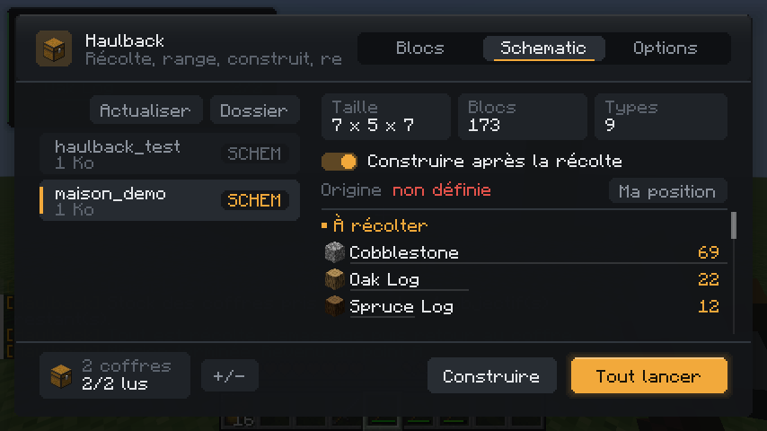
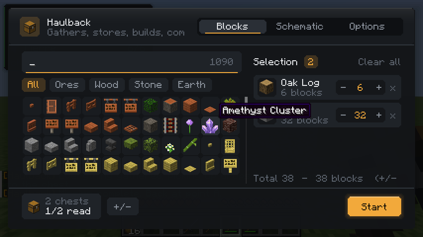
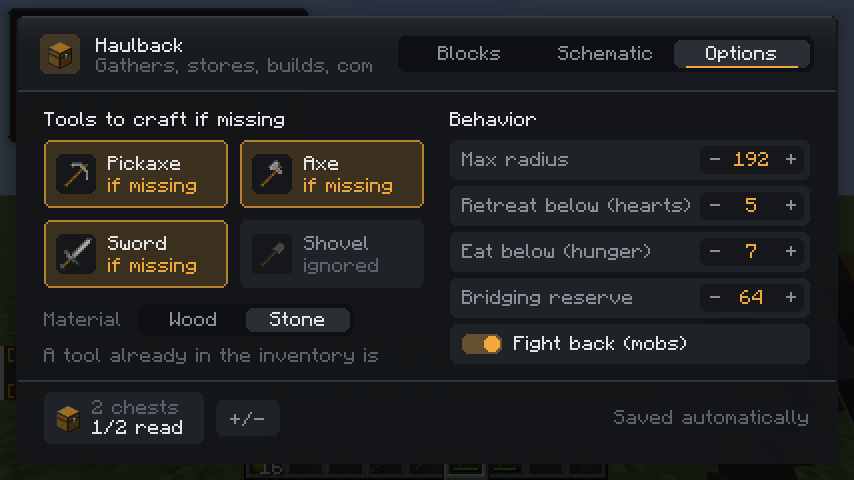
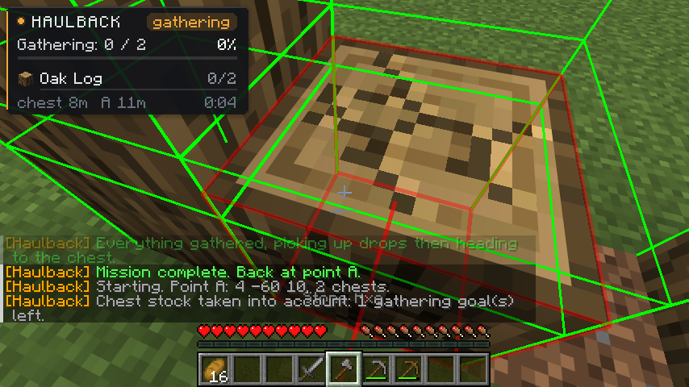
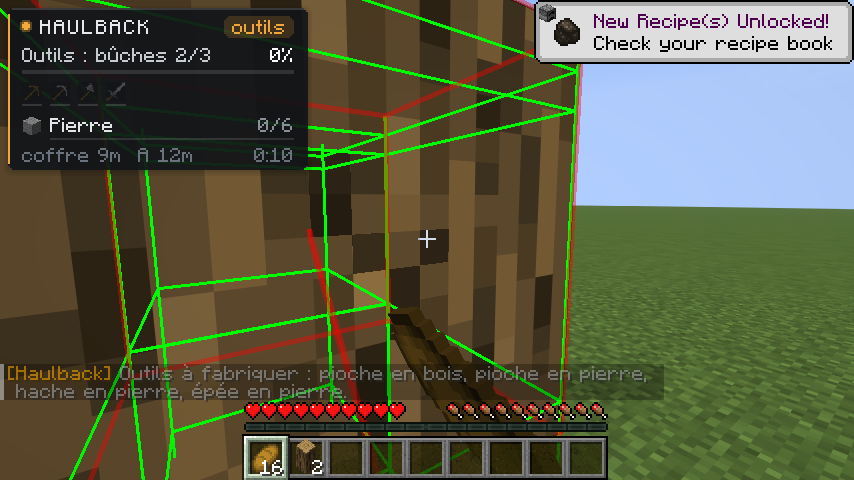
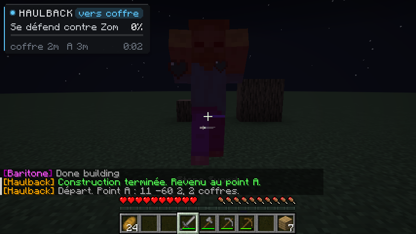
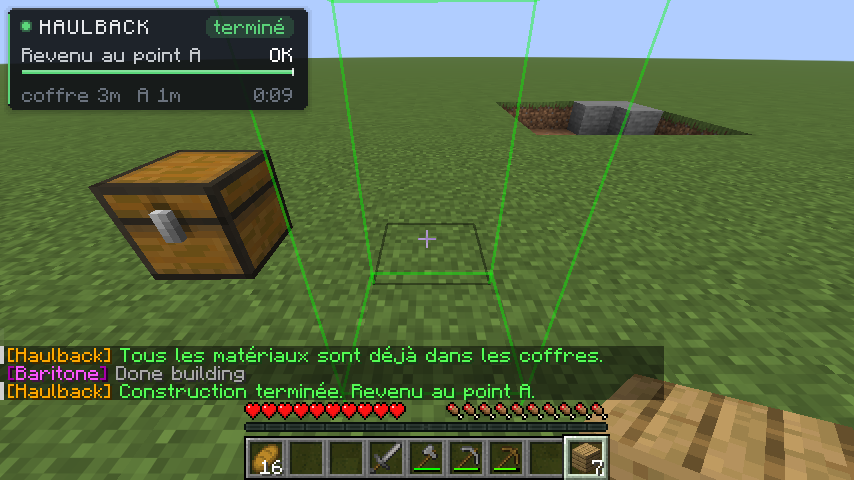

Choose blocks or a schematic. Haulback gathers the materials, crafts and smelts what the build needs, stores everything in your chests, builds it, and walks back to where it started. Built on Baritone.

Haulback turns a list of blocks or a schematic into a full errand: find, mine, process, store, build, come home.
Pick any blocks from an icon grid with category filters, set quantities, go.
Reads .litematic, .schem and .schematic, then walks the recipe tree down to raw resources.
Places a crafting table and furnaces by your chests, smelts glass, stone and ingots, crafts planks, stairs and slabs.
Reads every selected chest first and only fetches what is missing, intermediates included.
Wood, stone, then iron and diamond pickaxes when the blocks demand it. Never re-crafts a tool you already carry.
Eats, retreats to heal, chases down skeletons, leaves neutral mobs alone, and always comes home within a set radius.
Every step is handled for you. The HUD in the top-left corner shows where it is at, with live progress bars.
Reads your chests and subtracts the stock.
Crafts the missing pickaxe, axe, sword.
Mines the raw materials, picks up drops.
Smelts and crafts what the build needs.
Baritone places the schematic.
Walks back to point A.
A proper control panel, not a chat command. Graphite surfaces, color only where it means something.






Client-side only. Nothing to install on the server.
baritone-api-fabric-1.17.0.jar. The standalone build will not work.mods. On Lunar Client, use your Fabric profile's mods/fabric-1.21.11 folder.Rebindable in Options, Controls. The interface is in English, French, German and Spanish.
Honest limits, so nothing surprises you.